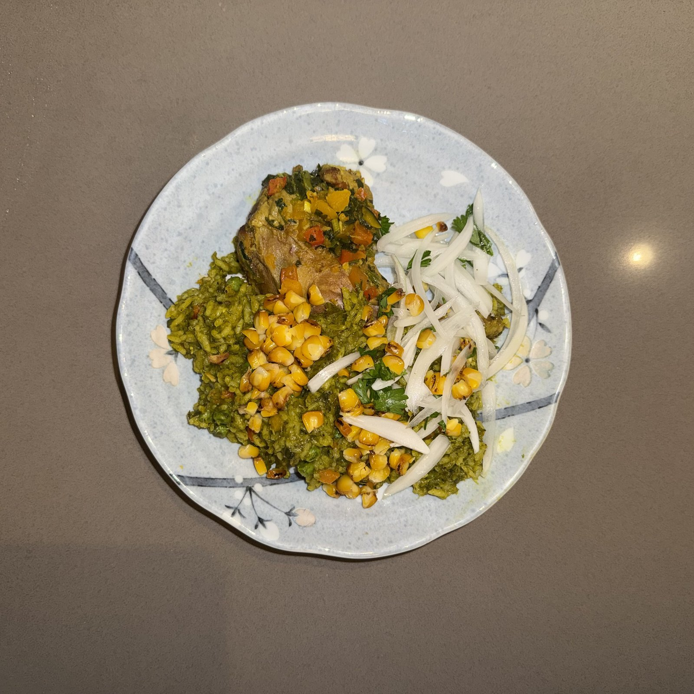

Food has the power of transporting us to places and through time. By exploring recent holidays from different cultures through research, implementation, tasting, and, finally, sharing, this blog documents the gastronomic explorations of a complete novice. Me!

Peru · Northern Peru (Chiclayo)
On the 28th of July, Peruvian streets fill with music, parade, and the fragrance of food. Among all the dishes on celebratory tables across Peru, Arroz con Pato stands out: vivid green from a mountain of fresh cilantro, deeply savory from beer-braised duck, and cut through at the end with a crisp salsa criolla. It originates in the farmlands around Chiclayo in northern Peru, where indigenous Moche cooking traditions met Spanish colonial ingredients and local herbs.
This dish requires patience — an overnight marinade, a slow braise, careful rice-to-broth ratios — but what comes out is something genuinely extraordinary. Every grain of rice carries the marinade and the duck, the salsa criolla arriving fresh and bright on top.
This blog does not claim authenticity as its forefront — quite the contrary. It's food from a stranger's standpoint. Having lived in many multicultural neighborhoods, I had the realization that there is so many unique holidays that I miss out on from other cultures (with so many good dishes), therefore I want this blog to share the present holidays of many backgrounds, its history, its traditions, and of course, its food. All from a stranger's learnings.
Food has long been just a necessity; people need food, yes, but since the dawn of time food and taste have gone hand in hand. Food doesn't just allow us to live — we live for food.
The fun of cooking is what this blog is for, it might not always turn out perfect, but have fun along the way. Feel free to eyeball, give or take as your heart desires. A grandma cooking approach rather than a chef's.
Correspondence is always welcome. Whether you have a recipe to share, a story to tell, or simply want to say hello.